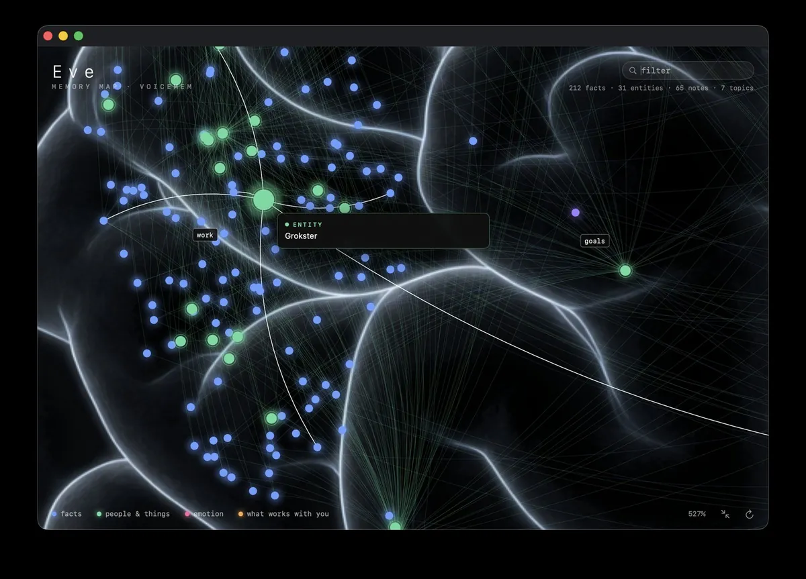
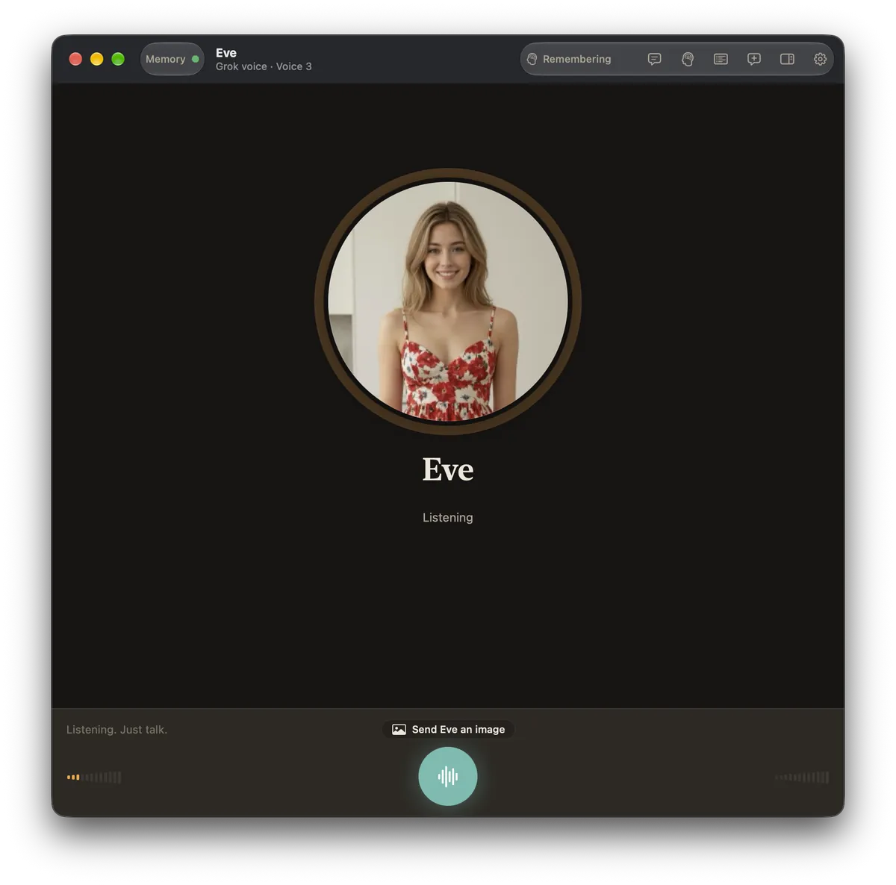
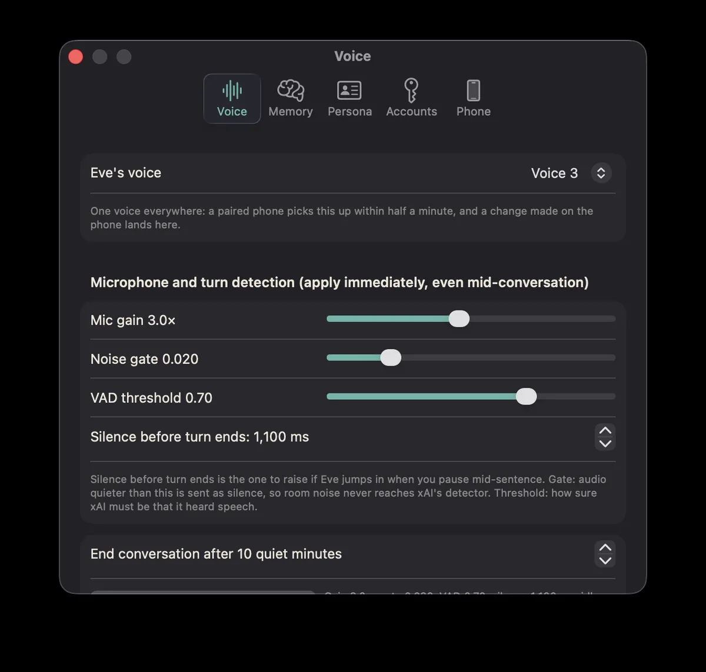

Grok Real-Time Voice 3.0
Eve for Mac and Eve R on TestFlight now use Grok Real-Time Voice 3.0 — the upgraded realtime voice chat behind every conversation.
She gets to know you — and it shows.
Every conversation with Eve is distilled into facts, people, notes, and topics that she keeps on your Mac. Ask about something you mentioned weeks ago and she just knows. Watch it all grow in her memory map.
A conversation, not a command line.
Click the mic and start talking. Eve listens, thinks, and replies in a natural voice. Server-side turn detection knows when you've finished, so there are no awkward pauses or cut-offs — just a conversation that flows.
Every exchange lands in a clean transcript with little chips showing when Eve recalled something from her memory to answer you.
Watch her memory map fill in.
Eve's long-term memory isn't a black box. Her memory map lays out everything she knows — facts, people and things, emotions, and what works with you — as a living brain you can zoom, filter, and explore.
Hover any node to see exactly what she remembers. Memories are written after every turn and recalled on demand, mid-reply, when they'd help.

Nothing between you and the conversation.
No text box, no clutter. Eve's main window is a calm, voice-first space — her face, her name, and a mic. Start a conversation with a click or a keyboard shortcut, and the transcript is there when you want to look back.

Settings that apply instantly.
Mic gain, noise gate, voice activity threshold, and how long a silence lasts before your turn ends — every control applies immediately, even mid-conversation, so you can dial Eve in while you're talking to her.
One voice everywhere: pick Eve's voice once and a paired iPhone picks it up within half a minute.

Show Eve an image.
Tap the Send Eve an image button next to the mic, pick any picture, and Eve looks at it — a photo, a screenshot, a document, something you're stuck on. DeepSeek's vision model describes it in a second or two, and then you just talk about it together, naturally.
Images live in the conversation, not in her memory map — the only thing she keeps is what the two of you say about them, exactly like everything else you discuss.
Eve R — Eve in your pocket.
Eve R brings Eve to your iPhone. Your voice goes straight to xAI from the phone, while her memory stays safely on your paired Mac, reached over your own private Tailscale network. Pair once by scanning a QR code, and she sounds the same everywhere.
Please note: Eve R is a companion to the Mac app and only works if Eve is installed and running on your Mac. If you don't have the Mac app, Eve R can't do anything for you — so grab Eve above first. To keep her reachable from your phone, turn on the Keep Mac alive option (bottom of Eve's Phone tab in Settings above) and set your MacBook to stay awake.
Two things Eve can't work without.
Eve is free, but she needs two accounts of your own to run. Both are mandatory — without them set up, the app won't work:
- An xAI account — either an xAI subscription you can sign in with, or an xAI API key. This powers Eve's voice and conversation.
- A DeepSeek API key — this powers Eve's long-term memory, distilling and organising everything she remembers about you, and her image understanding when you show her a picture.
You'll also need a Mac running macOS Tahoe 26 or later. And if you want to connect Eve R on your iPhone, you'll need Tailscale (100% free) installed on both devices so the phone can reach her memory privately.
Key features
- Natural, voice-only conversations powered by xAI's Grok realtime voice
- Server-side turn detection — she knows when you've finished, and replies straight away
- Real long-term memory: recalled mid-conversation, written after every turn
- Send Eve an image — she sees photos, screenshots, and documents, and talks them over with you
- A living memory map you can zoom, filter, and explore
- Instant-apply voice and microphone settings
- One voice across your Mac and a paired iPhone
- Signs in with your xAI subscription or API key
- Self-contained: the whole memory engine runs on your Mac, and your memories never leave it
- Signed and notarised direct download — no App Store required
- Also available — Eve R for iPhone, now in open TestFlight testing
Free to download.
Eve herself is free. To use her you'll need an xAI account (subscription sign-in or API key) for voice, and a DeepSeek API key for memory and image analysis — both are required. The download is a signed, notarised disk image (about 900 MB, because her entire on-device memory engine ships inside the app). Requires macOS Tahoe 26 or later.